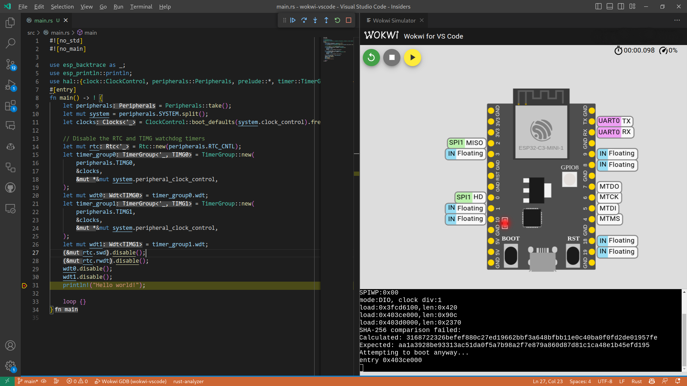

引言
本书的目的在于提供一个将 Rust 编程语言用于乐鑫（Espressif）设备的全面指南。
Rust 对这些设备的支持仍在不断改进中，并且进展迅速。因此，本文档的某些部分可能已经过时，或者在多次阅读之间发生了重大变化。
与 Rust on ESP 相关的工具和库，请查看 GitHub 上的 esp-rs 组织。该组织由乐鑫的员工以及社区成员共同管理。
欢迎加入 Matrix 上的 esp-rs 社区，来探讨任何技术问题！社区对所有人开放。
这本书适合谁
本书适用于具有一定 Rust 经验，并且对嵌入式开发和电子相关知识有基础了解的人群。对于没有相关经验的读者，我们建议先阅读前提条件和资源部分，以快速掌握相关知识。
前提条件
- 你能够轻松使用 Rust 编程语言，并且在桌面环境下编写和运行过应用程序。
- 你应该熟悉 Rust 2021 版的术语，因为本书面向的是 Rust 2021 版。
- 你能够轻松使用其他语言（如 C 或 C++）开发嵌入式系统，并熟悉以下概念：
- 交叉编译
- 常见数字接口，如
UART、SPI、I2C等 - 内存映射外设
- 中断
资源
如果你对上面提到的任何内容不够熟悉，或者只是想要关于书中特定主题的更多信息，以下资源可能会很有帮助：
| 资源 | 描述 |
|---|---|
| The Rust Programming Language | 如果你不熟悉 Rust，我们建议你先阅读这本书。 |
| The Embedded Rust Book | 这里包含由 Rust 嵌入式工作组提供的其他资源。 |
| The Embedonomicon | 在使用 Rust 进行嵌入式编程时的细节。 |
| Embedded Rust (std) on Espressif | 在乐鑫 SoC 上使用 std 的入门指南 |
| Embedded Rust (no_std) on Espressif | 在乐鑫 SoC 上使用 no_std 的入门指南 |
翻译
本书已由慷慨的志愿者参与翻译。如果你希望在此处列出你的译本，请（向英文原版仓库）提交 PR。
如何使用这本书
本书假设你按顺序从头到尾阅读。在没有前面章节的背景知识时，后面章节涵盖的内容可能会不太容易理解。
为本书做出贡献
本书的工作是在此代码仓库中进行协调的。
如果你在按照书中的说明进行操作时遇到问题，或者发现书中的某些部分不够清晰，那么这就是一个 bug。请在本书的 issue 追踪器中报告该问题。
欢迎提交修复 typo 和添加新内容的 Pull Request。
重用本材料
本书根据以下许可分发：
- 本书中包含的示例代码和独立的 Cargo 项目均根据 MIT 许可证和 Apache 许可证 v2.0 的条款获得许可。
- 本书中包含的文字、图片和图表均根据 Creative Commons CC-BY-SA v4.0 许可条款获得许可。
总而言之，如果要在你的作品中使用本书的文本或图像，你需要：
- 给予适当的认可（例如，在幻灯片上提及这本书，并提供相关页面的链接）
- 提供指向 CC-BY-SA v4.0 许可证的链接
- 指出你是否以任何方式更改了材料，并使这些更改在相同的许可证下可用
如果你觉得这本书有用，请告诉我们！
开发方式总览
在乐鑫芯片上使用 Rust 开发，有以下两种方式：
- 使用
std库，即标准库。 - 使用
core库（no_std），即裸机开发。
两种方式各有各的优缺点，因此需要根据项目需求选取。本章包含对两种开发方式的概述。
另请参阅 The Embedded Rust Book 中对不同运行时的比较。
GitHub 上的 esp-rs 组织 有多个仓库，与在乐鑫芯片上运行 Rust 相关。大多数所需的 crate 的源代码都托管在这里。
仓库命名约定
在 esp-rs 组织中，我们使用以下命名约定：
- 以
esp-开头的仓库关注no_std方式。例如esp-halno_std在裸机上运行，因此esp-代表乐鑫芯片
- 以
esp-idf-开头的仓库关注std方式。例如esp-idf-halstd在裸机之上，还需要一个额外的封装层，即esp-idf-
对乐鑫产品的支持
⚠️ 注意：
- ✅ - 此功能已实现或支持
- ⏳ - 此功能正在开发
- ❌ - 不支持此功能
- ⚠️ - 有一些支持，但该功能已停止开发
| 芯片 | std | no_std |
|---|---|---|
| ESP32 | ✅ | ✅ |
| ESP32-C2 | ✅ | ✅ |
| ESP32-C3 | ✅ | ✅ |
| ESP32-C6 | ✅ | ✅ |
| ESP32-S2 | ✅ | ✅ |
| ESP32-S3 | ✅ | ✅ |
| ESP32-H2 | ✅ | ✅ |
| ESP8266 | ❌ | ⚠️ |
⚠️ 注意：ESP8266 系列的 Rust 支持非常有限，而且没有得到 Espressif 官方的正式支持。
在一定情况下支持的产品，在本书中称为“支持的乐鑫产品”。
使用标准库（std）
乐鑫提供了一个基于 C 的开发框架，称为 ESP-IDF。它支持（或将会支持）所有名称以 ESP32 开头的乐鑫芯片。注意，该框架 不 支持 ESP8266。
ESP-IDF 提供了一个功能强大的 newlib 环境，足以在其上构建 Rust 标准库（std）。这就是在乐鑫设备上启用 std 支持的方法。
当前支持情况
只要是 ESP-IDF 框架支持的乐鑫产品，就支持 Rust std 开发。有关 ESP-IDF 的不同版本，以及乐鑫芯片支持的详细信息，请参阅此表格。
使用 std 时，可以访问 ESP-IDF 中存在的许多功能，包括线程、互斥锁和其他同步原语、集合、随机数生成、套接字等。
esp-rs 相关的 Crate
| 仓库 | 描述 |
|---|---|
embedded-svc | 嵌入式服务的抽象 trait（WiFi、Network、Httpd、Logging）。 |
esp-idf-svc | 用 esp-idf 驱动实现的 embedded-svc。 |
esp-idf-hal | 用 esp-idf 框架实现的 embedded-hal 和其他 trait。 |
esp-idf-sys | esp-idf 开发框架的 Rust 绑定（binding）。提供了对驱动、Wi-Fi 和其他功能的原始（unsafe）访问。 |
上述 crate 的相互依赖关系如下图所示。
graph TD;
esp-idf-hal --> esp-idf-sys & embedded-svc
esp-idf-svc --> esp-idf-sys & esp-idf-hal & embedded-svc
何时适合使用标准库（std）
- 丰富的功能：如果你的嵌入式系统需要大量功能，例如支持网络协议、文件 I/O 或复杂的数据结构，使用宿主环境（hosted-environment）会是一个较好的方法。因为
std库提供了丰富的功能，便于构建复杂的应用程序。 - 可移植性：
stdcrate 提供了一组标准化的 API，可以跨不同平台和架构使用，使你能够更轻松地编写可移植和可重用的代码。 - 快速开发：
stdcrate 提供了一组丰富的功能，可用于快速高效地构建应用程序，而无需过多担心底层细节。
使用核心库（no_std）
嵌入式 Rust 开发者可能更熟悉使用 no_std。这种开发方式不使用 std（Rust 标准库），而使用它的一个子集，即核心库。The Embedded Rust Book 中的一章介绍了相关的知识。
需要注意的是，no_std 使用 Rust 核心库。由于该库是 Rust 标准库的一部分，因此 no_std crate 可以在 std 环境中编译。反之则不然：std crate 无法在 no_std 环境中编译。在决定选择哪个库时，请记住这一点。
当前支持情况
下表展示了目前各类乐鑫产品对 no_std 的支持情况。
| HAL | Wi-Fi/BLE/ESP-NOW | Backtrace | Storage | |
|---|---|---|---|---|
| ESP32 | ✅ | ✅ | ✅ | ✅ |
| ESP32-C2 | ✅ | ✅ | ✅ | ✅ |
| ESP32-C3 | ✅ | ✅ | ✅ | ✅ |
| ESP32-C6 | ✅ | ✅ | ✅ | ✅ |
| ESP32-H2 | ✅ | ✅ | ✅ | ✅ |
| ESP32-S2 | ✅ | ✅ | ✅ | ✅ |
| ESP32-S3 | ✅ | ✅ | ✅ | ✅ |
⚠️ 注意:
- Wi-Fi/BLE/ESP-NOW 一列中的 ✅ 表示此目标支持其中至少一种功能。详细情况参见 esp-wifi 仓库中的 Current support 表格。
- ESP8266 HAL 处于维护状态，后续不会对此芯片做进一步开发。
esp-rs 相关的 Crate
| 仓库 | 描述 |
|---|---|
esp-hal | 硬件抽象层 |
esp-pacs | 外设访问 crate（PAC） |
esp-wifi | Wi-Fi、BLE 和 ESP-NOW 支持 |
esp-alloc | 简单的堆分配器 |
esp-println | print! 和 println! |
esp-backtrace | 异常和恐慌（panic）处理程序 |
esp-storage | 用于访问未加密 flash 的嵌入式存储 trait |
何时适合使用核心库（no_std）
- 内存占用小：如果你的嵌入式系统资源有限，并且需要较小的内存占用，采用裸机开发方式可能较好。因为引入
std会极大增加最终生成的二进制程序尺寸和编译时间。 - 直接的硬件控制：如果你的嵌入式系统需要对硬件进行更直接的控制，例如底层设备驱动或访问专用的硬件功能，采用裸机开发可能较好。因为
std引入了额外的抽象层，使得直接与硬件交互变得更加困难。 - 实时性约束或时间关键型应用：如果你的嵌入式系统需要较强的实时性，或较低的响应延迟时间。因为
std可能会引入不可预测的延迟和开销，从而影响实时性。 - 自定义需求：裸机开发允许对应用程序的行为进行更多自定义和细粒度的控制，这在专用或非标准环境中非常有用。
配置开发环境
目前，乐鑫的 SoC 基于两种不同的架构：RISC-V 和 Xtensa。两种架构都支持 std 和 no_std 开发方式。
为了配置开发环境，需要执行以下步骤：
- 安装 Rust
- 根据目标架构，安装相应的依赖项
不论是哪种目标架构，对于 std 开发，还需要安装 std 开发依赖项。
另外，还可以选择在容器中托管开发环境。
Rust 安装
确保你已经安装了 Rust。如果没有，请参阅 rustup 网站上的说明。
🚨 警告：使用基于 Unix 的系统时，通过系统的包管理器（例如
brew、apt、dnf等）安装 Rust 可能导致多种兼容性问题，因此最好还是使用 rustup。
使用 Windows 时，请确保你已安装下面列出的 ABI 之一。有关更多详细信息，请参阅 rustup book 中的 Windows 章节。
- MSVC：推荐的 ABI，包含在
rustup的默认依赖项列表中。使用此 ABI 可以与 Visual Studio 生成的软件实现互操作。 - GNU：GCC 工具链使用的 ABI。你可以自行安装它，以便与使用 MinGW/MSYS2 工具链构建的软件实现互操作。
另请参阅其他安装方案。
仅针对 RISC-V 目标
要为基于 RISC-V 架构的乐鑫芯片构建 Rust 应用程序，请执行以下步骤：
-
安装适当的工具链以及
rust-src组件：- 对于
no_std（裸机）应用，既可以使用stable，也可以使用nightly：
rustup toolchain install stable --component rust-src或
rustup toolchain install nightly --component rust-src- 对于
std应用，只能使用nightly：
rustup toolchain install nightly --component rust-src上面的命令下载了 rust 源码。
rust-src包含了 std 库、core 库和构建配置文件等。 下载rust-src的原因在于：- 确定性 - 你可以查看 core 和 std 库的内部结构。如果你正在编写需要较高确定性的软件，你可能需要检查正在使用的库。
- 构建自定义目标 -
rustc使用rust-src创建新的自定义目标的组件。如果你的目标是 rust 尚不支持的 triple-target，则必须下载rust-src。
关于自定义目标的更多信息，参见 Embedonomicon 的此章节。
- 对于
-
设置目标：
-
对于
no_std（裸机）应用，运行：rustup target add riscv32imc-unknown-none-elf # 针对 ESP32-C2 和 ESP32-C3 rustup target add riscv32imac-unknown-none-elf # 针对 ESP32-C6 和 ESP32-H2 -
对于
std应用：由于这些目标目前属于 Tier 3，所以不存在通过
rustup分发的预构建对象，并且与no_std目标不同，不需要安装任何东西。请参阅 rustc book 一书的 *-esp-idf 章节以找到适配具体设备的目标。riscv32imc-esp-espidf针对不支持原子指令（A）扩展的 SoC，例如 ESP32-C2 和 ESP32-C3riscv32imac-esp-espidf针对支持原子指令（A）扩展的 SoC，例如 ESP32-C6、ESP32-H2 和 ESP32-P4
-
-
为了构建
std项目，还需要安装：
现在你应该就能在乐鑫的 RISC-V 芯片上构建和运行一个项目了。
针对 RISC-V 和 Xtensa 目标
为 Xtensa 和 RISC-V 架构开发 Rust 应用程序，需要安装和维护一些组件。espup 是一款能够简化这一过程的工具。
1. 安装 espup
要安装 espup，执行：
cargo install espup --locked
也可以直接下载预编译好的发行二进制文件或使用cargo-binstall。
2. 安装必要的工具链
要为所有支持 Rust 开发的乐鑫目标，安装所有必要的工具，执行：
espup install
⚠️ 注意：
std应用需要安装一些额外的软件，参见std开发依赖项
3. 配置环境变量
espup 会创建一个 export 文件，其中包含构建项目所需的一些环境变量。
在 Windows 系统上（%USERPROFILE%\export-esp.ps1）
- 对于 Windows 用户，不需要 执行这个文件。这个文件只是用来展示哪些环境变量被修改了的。
在基于 Unix 的系统上（$HOME/export-esp.sh），有几种不同的方法来 source 这个文件：
-
在每个终端里 source 这个文件：
- source 这个 export 文件：
. $HOME/export-esp.sh
这种方法需要在每个新的 shell 里运行这个命令。
- source 这个 export 文件：
-
创建用于执行
export-esp.sh的别名（alias）：- 将以下命令复制粘贴到 shell 的配置文件中（
.profile、.bashrc、.zprofile等）：alias get_esprs='. $HOME/export-esp.sh' - 通过重启终端，或执行
source [配置文件的路径]，例如source ~/.bashrc，来刷新配置。
这种方法需要在每个新的 shell 里运行别名（alias）。
- 将以下命令复制粘贴到 shell 的配置文件中（
-
直接将环境变量添加到 shell 配置文件中：
- 把
$HOME/export-esp.sh的内容添加到 shell 的配置文件中：cat $HOME/export-esp.sh >> [配置文件的路径]，例如cat $HOME/export-esp.sh >> ~/.bashrc。 - 通过重启终端，或执行
source [配置文件的路径]，例如source ~/.bashrc，来刷新配置。
这种方法 不需要 任何 source。
export-esp.sh脚本会在每个 shell 里自动 source。 - 把
espup 安装了什么
为了启用对乐鑫目标的支持，espup 安装了以下工具：
分支编译器能与标准 Rust 编译器共存，允许在一个系统上同时安装两者。可以用任意一种 override 方法来调用分支编译器。
⚠️ 注意：我们正在努力将分支的代码合并入上游仓库
LLVM分支中的修改。合并正在进行中，详见这个跟踪 issue。- Rust 编译器分支。如果
LLVM中的修改被接受，我们将继续推进 Rust 编译器的修改。
如果你遇到了错误，请查看 Troubleshooting 章节。
Xtensa 目标的其他安装方法
- 使用
rust-build安装脚本。这是过去推荐的方式，但现在安装脚本已”功能冻结“，所有新功能将仅包含在espup中。请参阅仓库 README 文件以获取说明。 - 从源代码构建具有
Xtensa支持的 Rust 编译器。此过程的运算成本很高，可能需要一个或多个小时才能完成，具体取决于系统配置。除非有重大理由要求采用这种方法，否则不建议这样做。这是从源代码构建它的仓库：esp-rs/rust仓库。
std 开发依赖项
不论是哪种目标架构，对于 std 应用开发，还需要安装以下工具：
- ESP-IDF 依赖项:
- Windows：
python和git - Linux：查看 Linux ESP-IDF prerequisites。
- macOS：查看 macOS ESP-IDF prerequisites。
- Windows：
ldproxy二进制项 crate：一个将链接参数转发给实际链接器的工具，实际链接器本身也是通过参数指定的。执行以下命令来安装：cargo install ldproxy
⚠️ 注意：
std运行时将 ESP-IDF（Espressif IoT Development Framework）作为宿主环境，不过用户不需要安装它。esp-idf-sys 会自动下载安装 ESP-IDF，这是一个所有std项目都需要使用的 crate。
使用容器
你可以将开发环境托管在容器内，而不是直接安装在本机上。乐鑫提供了 idf-rust 镜像，支持 RISC-V 和 Xtensa 目标架构，并支持 std 和 no_std 开发。
有许多针对 linux/arm64 或 linux/amd64 平台的 tag。
对于每个 Rust 版本，我们都使用以下命名约定来生成 tag：
<芯片>_<rust工具链版本>- 例如，
esp32_1.64.0.0包含用于在ESP32上开发std和no_std应用的环境，使用的是1.64.0.0XtensaRust 工具链。
- 例如，
有几种特殊情况：
<芯片>可以是all，表示兼容所有乐鑫目标<rust工具链版本>可以是latest，表示XtensaRust 工具链的最新版本
根据你使用的操作系统，你可以选择任意一种容器运行时，例如 Docker、Podman 或 Lima。
编写自己的应用
安装了适当的 Rust 编译器和工具链后，就可以开始创建自己的应用了。
可以采用以下方法来编写应用：
- (强烈推荐) 从现成的模板生成项目：可以提供一个配置好的项目，节省时间，避免出错。
- 借助 Cargo 从零开始构建：需要更多专业知识，因为你需要配置项目的多个部分。
⚠️ 注意：用 Cargo 自行构建项目没有任何优势。在这里提及，只是因为这是生成 Rust 项目的常规方法。
本章不会介绍如何使用 cargo 从零开始创建项目，只会关注如何从模板生成项目。
本章使用到的工具将在下一章“工具”中详细介绍，需要时请随时参考。
从模板生成项目
我们目前维护了两个模板仓库：
esp-generate-no_std模板。esp-idf-template-std模板。
esp-generate
esp-generate 是一个项目生成工具，可用于生成包含所有必需配置和依赖项的应用程序
-
安装
esp-generate：cargo install esp-generate -
基于模板生成项目，选择芯片和项目名称：
esp-generate --chip=esp32c6 your-project参见
esp-generate简介了解模板项目的更多详细信息。调用
esp-generate子命令时，它会提示一个 TUI，你可以在其中选择应用程序的配置。完成此过程后，你将获得一个配置正确且可构建的项目。 -
构建/运行生成的项目：
- 用
cargo build编译项目（使用合适的工具链和目标）。 - 用
cargo run编译项目、向目标设备烧写程序、并开启一个串口监视器。
- 用
esp-idf-template
esp-idf-template 基于 cargo-generate，这是一个允许你基于现有模板创建新项目的工具。在我们的场景中，esp-idf-template 可用于生成包含所有必需配置和依赖项的应用程序。
-
安装
cargo generate：cargo install cargo-generate -
基于模板生成项目：
cargo generate esp-rs/esp-idf-template cargo参见
esp-idf-template简介了解模板项目的更多详细信息。调用
cargo generate子命令时，它会询问几个关于应用程序目标的问题。完成这些问题后，就会生成一个配置好的项目，可以直接构建。 -
构建/运行生成的项目：
- 用
cargo build编译项目（自动使用合适的工具链和目标）。 - 用
cargo run编译项目、向目标设备烧写程序、并开启一个串口监视器。
- 用
在模板中使用开发容器（Dev Container）
两个模板仓库都支持开发容器。
开发容器使用 idf-rust 镜像，配置开发环境中的使用容器一节对此进行了解释。这个镜像提供了一个无需安装即可为乐鑫芯片开发 Rust 应用程序的环境。开发容器还可以与 Wokwi 模拟器协作，以模拟项目，并允许使用 web-flash 从容器中进行烧写。
esp-generate 简介
既然我们已经了解了如何生成一个 no_std 项目，让我们看看生成的项目里有哪些东西，
尝试理解它的各个部分，并运行它。
检查生成的项目
使用 esp-generate 创建项目时，如果不指定额外选项：
esp-generate --chip esp32c3 your-project
应该会生成类似这样的文件结构：
├── build.rs
├── .cargo
│ └── config.toml
├── Cargo.toml
├── .gitignore
├── rust-toolchain.toml
├── src
│ ├── bin
│ │ └── main.rs
│ └── lib.rs
└── .vscode
└── settings.json
在进一步讨论之前，让我们看看这些文件的用途。
build.rs- 根据模板选项设置链接脚本参数
.cargo/config.toml- Cargo 的配置
- 定义了一些用于正确构建项目的选项
- 包含
espflash或probe-rs的自定义 runner 命令。例如，runner = "espflash flash --monitor"- 这意味着你可以直接使用cargo run来烧写和监控你的代码
Cargo.toml- Cargo 清单（manifest），通常声明了一些元数据和项目的依赖项
.gitignore- 指示
git要忽略哪些目录和文件
- 指示
rust-toolchain.toml- 定义要使用的 Rust 工具链的种类
- 根据目标设备，工具链可以是
nightly或esp
- 根据目标设备，工具链可以是
- 定义要使用的 Rust 工具链的种类
src/bin/main.rs- 项目的主要源文件
- 关于它的详细信息，请参阅下面的
main.rs简介一节
src/lib.rs- 用于告知 Rust 编译器这段代码不使用
libstd
- 用于告知 Rust 编译器这段代码不使用
.vscode/settings.json- 为 Visual Studio Code 定义一系列设置，使 Rust Analyzer 能够正常工作。
main.rs 简介
1 #![no_std]
2 #![no_main]#![no_std]- 用于告知 Rust 编译器这段代码不使用
libstd
- 用于告知 Rust 编译器这段代码不使用
#![no_main]no_main属性表示该程序不使用标准的 main 接口，这通常用在有完整的操作系统的情况下。我们将使用esp-riscv-rtcrate 中的入口（entry）属性来创建一个自定义入口点（entry point），而不是使用标准的 main。在此程序中，我们将入口点命名为main，但也可以使用任何其他名称。入口点函数必须是发散函数，即具有签名fn foo() -> !，这种类型表明该函数永远不会返回——这意味着程序永远不会终止。
4 use esp_backtrace as _;
5 use esp_hal::delay::Delay;
6 use esp_hal::prelude::*;
7 use log::info;use esp_backtrace as _;- 由于我们处于裸机环境中，因此需要一个 panic 处理程序，该处理程序在代码发生 panic 时运行
- 有多种不同的 crate 可选（例如
panic-halt），但是esp-backtrace提供了一个打印回溯地址的实现——与espflash配合，这些地址可以被解析为源代码中的位置
use esp_hal::delay::Delay;- 提供
Delay驱动实现。
- 提供
use esp_hal::prelude::*;- 导入
esp-halprelude。
- 导入
8 #[entry]
9 fn main() -> ! {
10 esp_println::logger::init_logger_from_env();
11
12 let delay = Delay::new();
13 loop {
14 info!("Hello world!");
15 delay.delay(500.millis());
16 }
17 }main 函数中包含：
esp_println::logger::init_logger_from_env();- 初始化日志记录器，如果定义了
ESP_LOG环境变量，将使用该日志级别。
- 初始化日志记录器，如果定义了
let delay = Delay::new();- 创建一个延迟实例。
loop {}- 由于我们的函数应该永远不会返回，所以我们使用循环
info!("Hello world!");- 创建一个
info级别的日志消息，打印 "Hello world!"。
- 创建一个
delay.delay(500.millis());- 等待 500 毫秒。
运行代码
构建和运行这段代码只需：
cargo run --release
这会根据配置构建代码，并执行 espflash 将其烧写到板子上。
由于 runner 配置还会将 --monitor 参数传递给 espflash，屏幕上将显示打印的内容。
确保已经安装了 espflash，否则此步骤会失败。执行此命令以安装 espflash：
cargo install espflash
屏幕上应该会显示类似这样的内容：
...
[2024-11-14T09:29:32Z INFO ] Serial port: '/dev/ttyUSB0'
[2024-11-14T09:29:32Z INFO ] Connecting...
[2024-11-14T09:29:32Z INFO ] Using flash stub
[2024-11-14T09:29:33Z WARN ] Setting baud rate higher than 115,200 can cause issues
Chip type: esp32c3 (revision v0.3)
Crystal frequency: 40 MHz
Flash size: 4MB
Features: WiFi, BLE
MAC address: a0:76:4e:5a:d2:c8
App/part. size: 76,064/4,128,768 bytes, 1.84%
[00:00:00] [========================================] 13/13 0x0
[00:00:00] [========================================] 1/1 0x8000
[00:00:00] [========================================] 11/11 0x10000
[2024-11-14T09:29:35Z INFO ] Flashing has completed!
Commands:
CTRL+R Reset chip
CTRL+C Exit
...
INFO - Hello world!
这些是第一和第二阶段 bootloader 产生的信息，然后是我们的 “Hello world” 信息！
这就是这段代码做的事情。
可以按 CTRL+R 重启，或按 CTRL+C 退出。
如果在构建项目时遇到了什么问题，请查看 Troubleshooting 章节。
esp-idf-template 简介
既然我们已经了解了如何生成一个 std 项目，让我们看看生成的项目里有哪些东西，并尝试理解它的各个部分。
检查生成的项目
从 esp-idf-template 创建项目，使用以下配置：
- Which MCU to target? ·
esp32c3 - Configure advanced template options? ·
false
在本节中，我们使用默认配置。如果需要进一步修改，请参阅 additional prompts。
应该会生成类似这样的文件结构：
├── .cargo
│ └── config.toml
├── src
│ └── main.rs
├── .gitignore
├── build.rs
├── Cargo.toml
├── rust-toolchain.toml
└── sdkconfig.defaults
在进一步讨论之前，让我们看看这些文件的用途。
.cargo/config.toml- Cargo 的配置
- 包含项目的目标
- 包含
runner = "espflash flash --monitor"- 这意味着你可以用cargo run来烧写并监视代码 - 包含要使用的链接器，在这里是
ldproxy - 启用了不稳定的 Cargo 特性
build-std - 包含
ESP-IDF-VERSION环境变量，用于告知esp-idf-sys本项目要使用哪个版本的 ESP-IDF
src/main.rs- 项目的主要源文件
- 关于它的详细信息，请参阅下面的
main.rs简介
.gitignore- 指示
git要忽略哪些目录和文件
- 指示
build.rs- 将链接参数传递给
ldproxy
- 将链接参数传递给
Cargo.toml- Cargo 清单（manifest），通常声明了一些元数据和项目的依赖项
rust-toolchain.toml- 定义要使用的 Rust 工具链的种类
- 根据目标设备，工具链可以是
nightly或esp
- 根据目标设备，工具链可以是
- 定义要使用的 Rust 工具链的种类
sdkconfig.defaults- 包含一些配置，用于覆盖 ESP-IDF 的默认值
main.rs 简介
1 use esp_idf_sys as _; // If using the `binstart` feature of `esp-idf-sys`, always keep this module imported
2
3 fn main() {
4 // It is necessary to call this function once. Otherwise some patches to the runtime
5 // implemented by esp-idf-sys might not link properly. See https://github.com/esp-rs/esp-idf-template/issues/71
6 esp_idf_sys::link_patches();
7 println!("Hello, world!");
8 }第一行是一个导入语句，定义了 ESP-IDF 的入口点（当根 crate 是定义了 main 函数的二进制 crate 时）。
然后，下面是一个普通的 main 函数，其中有几行代码：
- 调用
esp_idf_sys::link_patches函数，确保一些用 Rust 实现的 ESP-IDF 补丁能够被链接到最终的可执行文件里。 - 在控制台里打印著名的 “Hello, world!”
运行代码
构建和运行这段代码只需：
cargo run
这会根据配置构建代码，并执行 espflash 将其烧写到板子上。
由于 runner 配置还会将 --monitor 参数传递给 espflash，屏幕上将显示打印的内容。
确保已经安装了 espflash，否则此步骤会失败。执行此命令以安装 espflash：
cargo install espflash
屏幕上应该会显示类似这样的内容：
[2023-04-18T08:05:09Z INFO ] Connecting...
[2023-04-18T08:05:10Z INFO ] Using flash stub
[2023-04-18T08:05:10Z WARN ] Setting baud rate higher than 115,200 can cause issues
Chip type: esp32c3 (revision v0.3)
Crystal frequency: 40MHz
Flash size: 4MB
Features: WiFi, BLE
MAC address: 60:55:f9:c0:39:7c
App/part. size: 478,416/4,128,768 bytes, 11.59%
[00:00:00] [========================================] 13/13 0x0
[00:00:00] [========================================] 1/1 0x8000
[00:00:04] [========================================] 227/227 0x10000
[2023-04-18T08:05:15Z INFO ] Flashing has completed!
Commands:
CTRL+R Reset chip
CTRL+C Exit
...
I (344) cpu_start: Starting scheduler.
Hello, world!
如你所见，这些是第一和第二阶段 bootloader 产生的信息，然后是我们的 “Hello, world!”。
可以按 CTRL+R 重启，或按 CTRL+C 退出。
如果在构建项目时遇到了什么问题，请查看 Troubleshooting 章节。
编写 no_std 应用
如果你想要学习如何开发 no_std 应用，可以阅读以下材料：
这个教程是基于 ESP32-C3-DevKit-RUST-1 开发板的。也可以使用其他乐鑫开发板，但是可能需要修改代码和项目配置。
这个教程包含：
- 入门示例：
⚠️ 注意：在
esp-hal的examples文件夹下有若干示例，涵盖了特定外设的使用方法。针对给定示例的运行方式和设备兼容性等信息，可以参考examplesREADME 。
编写 std 应用
如果你想要学习如何开发 std 应用，可以阅读这些我们与 Ferrous Systems 合作编写的材料：
这个教程是基于 ESP32-C3-DevKit-RUST-1 开发板的。也可以使用其他乐鑫开发板，但是可能需要修改代码和项目配置。
这个教程包含两个部分：
⚠️ 注意：
esp-idf-hal的示例文件夹下有几个示例，涵盖了特定外设的使用方法。即esp-idf-hal/examples。
工具
现在我们已经安装了所需的依赖项，并知道如何生成模板项目，我们将更详细地介绍一些工具。这些工具将使为乐鑫芯片开发 Rust 应用程序变得更加容易。
在本章中，我们将介绍 espflash/cargo-espflash，建议使用 Visual Studio Code 作为 IDE，并深入探讨当前可用的仿真和调试方法。
Visual Studio Code
Microsoft 的 Visual Studio Code 文本编辑器以及 Rust Analyzer 扩展，也称为 RA，是较常见的开发环境之一。
Visual Studio Code 是一个开源的跨平台图形化文本编辑器，具有丰富的扩展生态系统。Rust Analyzer 扩展为 Rust 提供了 Language Server Protocol（语言服务器协议的实现，并包括自动完成、跳转到定义等功能。
Visual Studio Code 可以通过大多数流行的软件包管理器安装，也可以在官方网站上获得安装程序。Rust Analyzer 扩展可以通过内置的扩展管理器在 Visual Studio Code 中安装。
除了 Rust Analyzer 之外，其他扩展也可能有所帮助：
- Even Better TOML用于编辑基于 TOML 的配置文件
- crates用于帮助管理 Rust 依赖项
实用建议
在 no_std 下使用 Rust Analyzer
如果为不支持 std 的目标开发，Rust Analyzer 可能会表现出奇怪的行为，通常会报告各种错误。这可以通过在项目中创建 .vscode/settings.json 文件并填充以下内容来解决：
{
"rust-analyzer.check.allTargets": false
}
在使用自定义工具链时使用 Cargo 提示
如果正在使用自定义工具链，就像在 Xtensa 目标中一样，可以通过 rust-toolchain.toml 文件向 cargo 提供一些提示，以改善用户体验：
[toolchain]
channel = "esp"
components = ["rustfmt", "rustc-dev"]
targets = ["xtensa-esp32-none-elf"]
其他 IDE
选择介绍 VS Code 是因为它对 Rust 有很好的支持，并且在开发者中很受欢迎。还有其他一些 IDE 也有相当的 Rust 支持，如 CLion 和 vim，但这些不在本书的讨论范围内。
espflash
espflash 是一个基于 esptool.py 的乐鑫 SoC 和模块的串口下载工具。
espflash 仓库包含两个 crate，cargo-espflash 和 espflash。有关这些 crate 的更多信息，请参见下面的各自部分。
⚠️ 注意: 下面显示的
espflash和cargo-espflash命令，假定使用2.0或更高版本。
cargo-espflash
为 cargo 提供一个子命令，处理交叉编译和下载。
要安装 cargo-espflash，请确保你已经安装了必需的依赖项，然后执行以下命令：
cargo install cargo-espflash
此命令必须在 Cargo 项目中运行，即包含 Cargo.toml 文件的目录。例如，要构建名为 “blinky” 的示例，将生成的二进制文件下载到设备中，然后启动串行监视器：
cargo espflash flash --example=blinky --monitor
有关更多信息，请参见 cargo-espflash README。
espflash
提供一个独立的命令行应用程序，将 ELF 文件下载到设备中。
要安装 espflash，请确保你已经安装了必需的依赖项，然后执行以下命令：
cargo install espflash
假设你已经通过其他方式构建了 ELF 二进制文件，espflash 可以用于将其下载到设备并监视串行端口。例如，如果你已经使用 idf.py 从 ESP-IDF 构建了名为 “getting-started/blinky” 的示例，可以运行类似以下的命令：
espflash flash build/blinky --monitor
有关更多信息，请参见 espflash README。
espflash 可以通过在你的项目的 .cargo/config.toml 文件中添加以下内容，作为 Cargo runner 来使用：
[target.'cfg(any(target_arch = "riscv32", target_arch = "xtensa"))']
runner = "espflash flash --monitor"
使用此配置，可以通过 cargo run 下载和监控应用程序。
调试
在本章中，我们将介绍使用不同工具进行调试 Rust 应用程序的方法。
请参考下表，了解每种调试方法支持的芯片：
| probe-rs | OpenOCD | |
|---|---|---|
| ESP32 | ✅ | ✅ |
| ESP32-C2 | ✅ | ✅ |
| ESP32-C3 | ✅ | ✅ |
| ESP32-C6 | ✅ | ✅ |
| ESP32-H2 | ✅ | ✅ |
| ESP32-S2 | ✅ | ✅ |
| ESP32-S3 | ✅ | ✅ |
⚠️ 注意：Xtensa 支持仍在进行中，请参阅 probe-rs#2001 以获取更多信息。
USB-JTAG-SERIAL 外设
我们最近的一些产品包含 USB-JTAG-SERIAL 外设，允许在不借助任何外部硬件调试器的情况下进行调试。对于支持此外设的芯片，可以在官方文档里找到关于配置接口的更多信息：
-
- 内置 JTAG 接口的可用性取决于 ESP32-C3 版本：
- 0.3 之前的版本没有内置 JTAG 接口。
- 0.3（及之后的版本）具有内置 JTAG 接口，无需连接外部设备即可进行调试。
- 默认情况下，ESP32-C3 Devkit C 不会通过 USB 提供 JTAG 接口，请参阅 ESP32-C3 调试文档 配置开发板进行调试，或考虑使用 esp32c3-rust-board。
要查询 ESP32-C3 的版本，请运行以下命令：
cargo espflash board-info # 或者 espflash board-info - 内置 JTAG 接口的可用性取决于 ESP32-C3 版本：
probe-rs
probe-rs 项目是一组工具，用于使用各种调试探针与嵌入式 MCU 进行交互。它类似于 OpenOCD、pyOCD、Segger 工具等。支持 Xtensa 和 RISC-V 架构以及一系列工具，包括但不限于：
- 调试器
- GDB 支持。
- 用于交互式调试的 CLI。
- VS Code 扩展。
- 实时传输（RTT）
- 类似于 IDF 的
app_trace组件。
- 类似于 IDF 的
- 烧录算法
包含 USB-JTAG-SERIAL 外设的乐鑫产品无需任何外部硬件即可使用 probe-rs。
用 probe-rs 烧写
probe-rs 可以用于烧写程序，因为它支持 ESP-IDF image format。
- 烧写 ESP32-C3 的命令示例：
probe-rs run --chip esp32c3
添加以下内容到项目中的 .cargo/config.toml 文件，就可以把烧写命令用作自定义 Cargo runner：
[target.'cfg(any(target_arch = "riscv32", target_arch = "xtensa"))']
runner = "probe-rs run --chip esp32c3"
通过此配置，就可以使用 cargo run 来烧写并监控你的应用程序。
VS Code 扩展
VS Code 有 probe-rs 扩展。关于如何安装、配置和使用，请参考 probe-rs VS Code 文档。
示例 launch.json
{
"version": "0.2.0",
"configurations": [
{
"type": "probe-rs-debug",
"request": "launch",
"name": "Launch",
"cwd": "${workspaceFolder}",
"chip": "esp32c3", //!MODIFY
// probe field only needed if multiple probes connected. <Serial> is the MAC address of your esp in case of usb-jtag
"probe": "VID:PID:<Serial>", //!MODIFY (or remove) | optional field
"flashingConfig": {
"flashingEnabled": true,
"haltAfterReset": true,
"formatOptions": {
"binaryFormat": "idf"
}
},
"coreConfigs": [
{
"coreIndex": 0,
"programBinary": "target/riscv32imc-unknown-none-elf/debug/${workspaceFolderBasename}", //!MODIFY
// svdFiles describe the hardware register names off the esp peripherals, such as the LEDC peripheral.
// They can be downloaded seperatly @ https://github.com/espressif/svd/tree/main/svd
"svdFile": "${workspaceFolder}/esp32c3.svd" //!MODIFY (or remove) | optional field
}
]
},
{
"type": "probe-rs-debug",
"request": "attach",
"name": "Attach",
"cwd": "${workspaceFolder}",
"chip": "esp32c3", //!MODIFY
"probe": "VID:PID:<Serial>", //!MODIFY (or remove) | optional field
"coreConfigs": [
{
"coreIndex": 0,
"programBinary": "target/riscv32imc-unknown-none-elf/debug/${workspaceFolderBasename}", //!MODIFY
"svdFile": "${workspaceFolder}/esp32c3.svd" //!MODIFY (or remove) | optional field
}
]
}
]
}
Launch 配置将烧写设备并开始调试，而 Attach 将在正在运行的应用程序上开始调试。有关更多详细信息，请参考 launch 和 attach 之间差异的 VS Code 文档。
cargo-flash 和 cargo-embed
probe-rs 附带这两个工具：
cargo-flash：一个烧写工具，可将二进制文件烧写到目标设备，并运行。cargo-embed：cargo-flash的超集，允许打开 RTT 终端或 GDB 服务器。可以用配置文件来定义其行为。
GDB 集成
probe-rs 包含 GDB stub，可以使用常用工具集成到你的常用工作流程中。 probe-rs gdb 命令会启动 GDB server，默认在 1337 端口上运行。
espressif/binutils-gdb 包含支持所有乐鑫设备的 GDB。
OpenOCD
与 probe-rs 类似，OpenOCD 不支持 Xtensa 架构。然而，乐鑫在 espressif/openocd-esp32 下维护了一个 OpenOCD 的分支，该分支支持乐鑫的芯片。
有关如何在你的平台上安装 openocd-esp32 的说明可以在乐鑫文档中找到。
支持所有乐鑫产品的 GDB 可以在 espressif/binutils-gdb 中获得。
安装完成后，只需使用正确的参数运行 openocd 即可。对于具有内置 USB-JTAG-SERIAL 外设 的芯片，通常有一个可以直接使用的配置文件，例如在 ESP32-C3 上：
openocd -f board/esp32c3-builtin.cfg
对于其他配置，可能需要指定芯片和接口，例如，使用 J-Link 的 ESP32：
openocd -f interface/jlink.cfg -f target/esp32.cfg
VS Code 扩展
OpenOCD 可以通过 cortex-debug 扩展在 VS Code 中使用，以调试乐鑫产品。
配置
- 如果需要，连接外部 JTAG 适配器。
- 请参阅 ESP-IDF 编程指南的"配置其他 JTAG 接口"部分。例如：ESP32 部分
⚠️ 注意：在 Windows 上，
USB Serial Converter A 0403 6010 00驱动程序应该是 WinUSB。
- 设置 VSCode
- 为 VS Code 安装 Cortex-Debug 扩展。
- 在要调试的项目树中创建
.vscode/launch.json文件。 - 更新
executable、svdFile、serverpath路径和toolchainPrefix字段。
{
// Use IntelliSense to learn about possible attributes.
// Hover to view descriptions of existing attributes.
// For more information, visit: https://go.microsoft.com/fwlink/?linkid=830387
"version": "0.2.0",
"configurations": [
{
// more info at: https://github.com/Marus/cortex-debug/blob/master/package.json
"name": "Attach",
"type": "cortex-debug",
"request": "attach", // launch will fail when attempting to download the app into the target
"cwd": "${workspaceRoot}",
"executable": "target/xtensa-esp32-none-elf/debug/.....", //!MODIFY
"servertype": "openocd",
"interface": "jtag",
"toolchainPrefix": "xtensa-esp32-elf", //!MODIFY
"openOCDPreConfigLaunchCommands": ["set ESP_RTOS none"],
"serverpath": "C:/Espressif/tools/openocd-esp32/v0.11.0-esp32-20220411/openocd-esp32/bin/openocd.exe", //!MODIFY
"gdbPath": "C:/Espressif/tools/riscv32-esp-elf-gdb/riscv32-esp-elf-gdb/bin/riscv32-esp-elf-gdb.exe", //!MODIFY
"configFiles": ["board/esp32-wrover-kit-3.3v.cfg"], //!MODIFY
"overrideAttachCommands": [
"set remote hardware-watchpoint-limit 2",
"mon halt",
"flushregs"
],
"overrideRestartCommands": ["mon reset halt", "flushregs", "c"]
}
]
}
多核调试
有时你可能需要在 GDB 或 VSCode 中单独调试每个核心。在这种情况下，将 set ESP_RTOS none 更改为 set ESP_RTOS hwthread。这将使每个核心在 GDB 中显示为硬件线程。这在乐鑫官方文档中目前没有记录，但在 OpenOCD 文档中有说明：https://openocd.org/doc/html/GDB-and-OpenOCD.html
仿真
仿真可能很方便。它允许用户使用 CI（持续集成）来测试项目、在没有可用硬件的情况下尝试项目，还有许多其他使用场景。
目前，有多种方法可以在乐鑫芯片上仿真 Rust 项目。每种方法都有一些限制，但它们正在迅速发展，并且每天都在变得更好。
在本章中，我们将讨论当前可用的仿真工具。
请参考下表，以了解每种仿真方法支持哪种芯片：
| Wokwi | QEMU | |
|---|---|---|
| ESP32 | ✅ | ✅ |
| ESP32-C2 | ❌ | ❌ |
| ESP32-C3 | ✅ | ❌ |
| ESP32-C6 | ✅ | ❌ |
| ESP32-H2 | ✅ | ❌ |
| ESP32-S2 | ✅ | ❌ |
| ESP32-S3 | ✅ | ❌ |
Wokwi
Wokwi 是一个在线模拟器，支持在乐鑫芯片上模拟 Rust 项目（包括 std 和 no_std）。
请参考 wokwi.com/rust 以获取示例列表和开始新项目的方法。
Wokwi 提供了 Wi-Fi 仿真、虚拟逻辑分析仪和 GDB 调试等许多功能，请参考 Wokwi 文档以获取更多详细信息。 对于 ESP 芯片，有一个仿真功能表格，列出了当前支持的功能。
使用 Wokwi VS Code 扩展
Wokwi 提供了一个 VS Code 扩展，允许通过添加几个文件直接在代码编辑器中模拟项目。 更多信息，请参考 Wokwi 文档。 还可以使用 VS Code 调试器调试代码，请参考调试你的代码。
当使用任何模板并且不使用默认值时，会有一个提示（Configure project to support Wokwi simulation with Wokwi VS Code extension?），可以生成使用 Wokwi VS Code 扩展所必需的文件。

使用 wokwi-server
wokwi-server 是一个 CLI 工具，用于启动项目的 Wokwi 仿真。也就是说，它允许在本地或容器中构建项目，并模拟生成的二进制文件。
wokwi-server 还允许在其他 Wokwi 项目上模拟二进制文件，除了芯片本身外还有更多的硬件部件。请参考 wokwi-server README 的相应部分 以获取详细说明。
自定义芯片
Wokwi 允许生成自定义芯片，让你对 Wokwi 不支持的组件的行为进行编程。更多详情，请参考官方 Wokwi 文档。
自定义芯片也可以用 Rust 编写！请参考 Wokwi Custom Chip API 以获取更多信息。例如，使用 Rust 编写的自定义反相器芯片。
QEMU
乐鑫维护了一个 QEMU 的分支，位于 espressif/QEMU，其中包含了必要的补丁，使其能够在乐鑫芯片上运行。 请参考 ESP 专用的 QEMU 使用指南 以了解如何构建 QEMU 并使用它来仿真项目。
构建完成 QEMU 后，应该有 qemu-system-xtensa 文件。
使用 QEMU 运行项目
⚠️ 注意: 目前只支持 ESP32，因此请确保正在编译
xtensa-esp32-espidf目标。
要在 QEMU 中运行我们的项目，我们需要一个固件（firmware）/镜像（image），其中包含引导加载程序（bootloader）和分区表。
我们可以使用 cargo-espflash 来生成它：
cargo espflash save-image --chip esp32 --merge <OUTFILE> --release
如果想使用 espflash，可以先构建项目，然后生成镜像来实现相同的结果：
cargo build --release
espflash save-image --chip esp32 --merge target/xtensa-esp32-espidf/release/<NAME> <OUTFILE>
现在，在 QEMU 中运行镜像：
/path/to/qemu-system-xtensa -nographic -machine esp32 -drive file=<OUTFILE>,if=mtd,format=raw -m 4M
Troubleshooting
本章列出了我们在长期使用过程中遇到的某些问题和常见故障，以及相应的解决方案。本页面收集了与所选 ESP 生态系统无关的常见问题。如果你在此处找不到你遇到的问题，请随时在相应的代码仓库中提出 issue，或在我们的 Matrix 聊天室中提问。
使用了错误的 Rust 工具链
$ cargo build
error: failed to run `rustc` to learn about target-specific information
Caused by:
process didn't exit successfully: `rustc - --crate-name ___ --print=file-names --target xtensa-esp32-espidf --crate-type bin --crate-type rlib --crate-type dylib --crate-type cdylib --crate-type staticlib --crate-type proc-macro --print=sysroot --print=cfg` (exit status: 1)
--- stderr
error: Error loading target specification: Could not find specification for target "xtensa-esp32-espidf". Run `rustc --print target-list` for a list of built-in targets
如果你遇到了上述错误或类似错误，那么你可能没有使用正确的 Rust 工具链。请记住，对于 Xtensa 目标，你需要使用 Espressif Rust 分支工具链，有以下几种方法：
- 在命令行中使用工具链 override，即：
cargo +esp。 - 将
RUSTUP_TOOLCHAIN环境变量设置为esp。 - 设置目录 override：
rustup override set esp - 在你的项目中添加
rust-toolchain.toml文件：[toolchain] channel = "esp" - 将
esp设置为默认工具链。
有关工具链 override 的更多信息，请参阅 The rustup book 的 Overrides 章节。
Windows
长路径名
在使用 Windows 时，如果路径名过长，你可能会在构建新项目时遇到问题。
此外，构建 std 应用程序时，如果你的项目路径长度超过约 10 个字符，构建将失败并出现错误。
要解决此问题，你需要缩短你的项目名称，并将其移动到驱动器根目录，例如 C:\myproj。
还要注意，虽然使用 Windows subst 命令（例如 subst r: <pathToYourProject>）可能看起来像是在构建期间使用短路径的简单解决方案，同时仍保持项目位置不变，
但它根本不起作用，因为短的、替代的路径会被 Windows API 扩展为它们的实际（长）位置。
另一种替代方案是安装 Windows Subsystem for Linux (WSL)，将你的项目移动到本机 Linux 文件分区内， 在 WSL 内构建，并且只从 WSL 外部烧录编译的 MCU ELF 文件。
缺少 ABI
Compiling cc v1.0.69
error: linker `link.exe` not found
|
= note: The system cannot find the file specified. (os error 2)
note: the msvc targets depend on the msvc linker but `link.exe` was not found
note: please ensure that VS 2013, VS 2015, VS 2017 or VS 2019 was installed with the Visual C++ option
error: could not compile `compiler_builtins` due to previous error
warning: build failed, waiting for other jobs to finish...
error: build failed
此错误的原因是我们缺少 MSVC C++，因此我们没有满足编译时要求。请安装 Visual Studio 2013（或更高版本）或 Visual C++ Build Tools 2019。对于 Visual Studio，请确保选中"C++ 工具"和"Windows 10 SDK"选项。 如果使用 GNU ABI，请安装 MinGW/MSYS2 工具链。
esp-idf-sys based projects
Wrong Xtal Frequency
Using a 26 Mhz crystal instead of a 40 MHz requires modifying the sdkconfig. Add the following configuration option to your sdkconfig file:
CONFIG_XTAL_FREQ_26=y
After making this adjustment, execute cargo clean to ensure that the changes are properly incorporated into your project. See sdkconfig section.
When using an esp-idf-sys based project, you should also prefer using cargo-espflash instead of espflash. cargo-espflash integrates with your
project and it will flash the bootloader and partition table that is built for your project instead of the default one, see the corresponding cargo-espflash readme section.
If you want to use espflash, you can specify an appropriate bootloader and partition table using --bootloader and --partition-table. You can find the bootloader in target/<your MCU's target folder>/<debug or release depending on your build>/bootloader.bin and partition table in target/<your MCU's target folder>/<debug or release depending on your build>/partition-table.bin
Environment Variable LIBCLANG_PATH Not Set
thread 'main' panicked at 'Unable to find libclang: "couldn't find any valid shared libraries matching: ['libclang.so', 'libclang-*.so', 'libclang.so.*', 'libclang-*.so.*'], set the `LIBCLANG_PATH` environment variable to a path where one of these files can be found (invalid: [])"', /home/esp/.cargo/registry/src/github.com-1ecc6299db9ec823/bindgen-0.60.1/src/lib.rs:2172:31
We need libclang for bindgen to generate the Rust bindings to the ESP-IDF C headers.
Make sure you have sourced the export file generated by espup, see Set up the environment variables.
Missing ldproxy
error: linker `ldproxy` not found
|
= note: No such file or directory (os error 2)
If you are trying to build a std application ldproxy must be installed. See std Development Requirements
cargo install ldproxy
sdkconfig.defaults File is Updated but it Doesn't Appear to Have Had Any Effect
You must clean your project and rebuild for changes in the sdkconfig.defaults to take effect:
cargo clean
cargo build
The Documentation for the Crates Mentioned on This Page is out of Date or Missing
Due to the resource limits imposed by docs.rs, internet access is blocked while building documentation. For this reason, we are unable to build the documentation for esp-idf-sys or any crate depending on it.
Instead, we are building the documentation and hosting it ourselves on GitHub Pages:
A Stack Overflow in Task main has Been Detected
If the second-stage bootloader reports this error, you likely need to increase the stack size for the main task. This can be accomplished by adding the following to the sdkconfig.defaults file:
CONFIG_ESP_MAIN_TASK_STACK_SIZE=7000
In this example, we are allocating 7 kB for the main task's stack.
How to Disable Watchdog Timer(s)?
Add to your sdkconfig.defaults file:
CONFIG_INT_WDT=n
CONFIG_ESP_TASK_WDT=n
Recall that you must clean your project before rebuilding when modifying these configuration files.